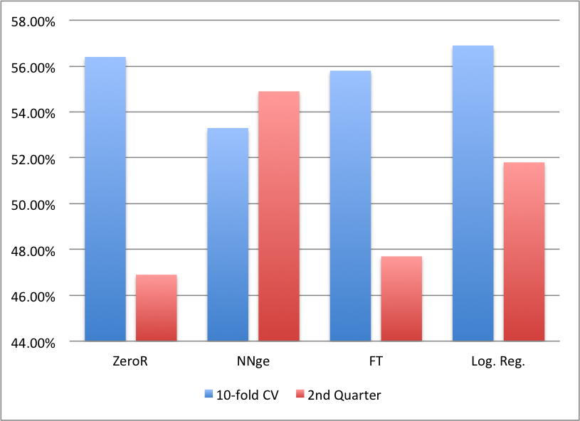

A project by Ryan Madden
Final Paper:
This project is maintained by ryanmadden
The stocks comprising the Dow Jones Industrial Average (DJIA) are some of the largest and most successful publicly traded stocks in the United States (e.g. Microsoft, Apple, Exxon Mobil). Being able to predict which of these stocks will be successful based on a previous week’s data, even at margins slightly above 50%, could prove to be incredibly lucrative. My goal is to predict which stocks in the DJIA will have a net value gain over the following week given data for the current week. Investing money in the stock market is a gamble because it is difficult to know whether a stock will rise or fall in value. By achieving my goal I can help investors make confident and safe investments.
My dataset includes 750 instances of Dow Jones stock weekly metrics including sixteen features, eleven of which are used in this analysis. The data represents the performance of every DJIA stock in the first and second financial quarters of 2011. I partitioned the data into two sets based on financial quarter. There are 360 examples in the first quarter and 390 in the second quarter. My goal was to evaluate the effectiveness of different classifiers using 10-fold cross-validation on the first quarter’s data and then test the best classifiers on the second quarter’s data, using the first quarter as a training set. To achieve this, I converted the data into .arff format and used Weka to test different classifiers.
The final feature set contained eleven features:
I tested several classifiers using Weka including ZeroR (naive classification), NNge (Nearest neighbor), FT (functional trees), and Logistic Regression.
I tested each of the above classifiers on the first quarter’s data using 10-fold cross-validation as well as testing on the second quarter’s data using the first quarter as a training set (Figure 1). Although I tested many other classifiers, few performed better than 52% on either the cross-validation or the testing on the second quarter’s data.
Figure 1. This graph shows the performance of each classifier on the dataset
Very few classifiers provided any sort of reliable results. As demonstrated in Figure 1, nearest neighbor was the only algorithm that performed noticeably above 50% for both the cross-validation on the first quarter’s data (53.3%) and the testing on the second quarter’s data (54.9%). This makes some intuitive sense, since stocks with similar characteristics in a given week could be expected to behave similarly. Although ~55% correct classification on the test set may not seem like a success, it is important to remember the context of the stock market. Due to the general uncertainty that comes with stock trading, an algorithm with 55% accuracy could be used for great monetary gain.